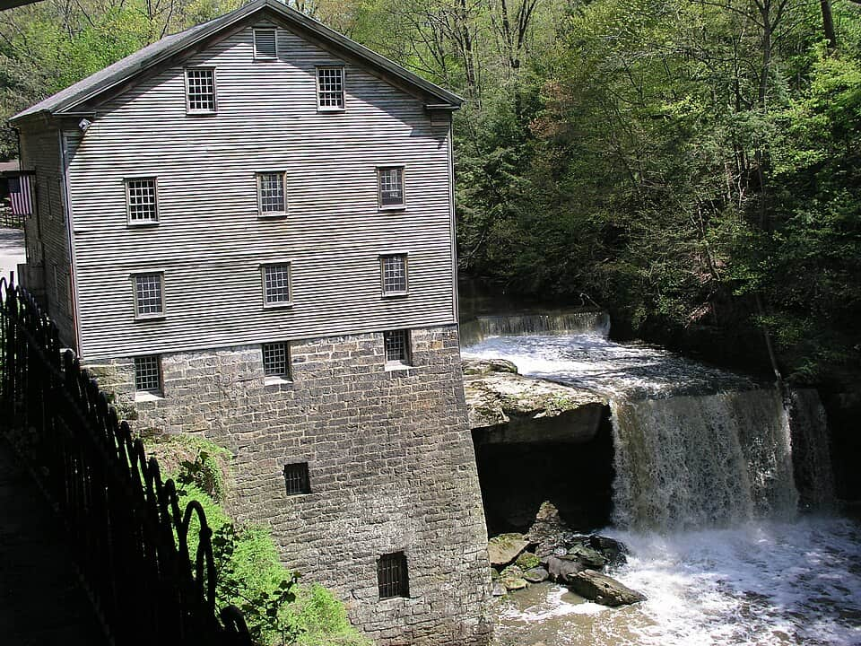

United States
Youngstown
steel, parks & the odd corners
62 places · 4 areas · every one sourced, pinned and status-checked · last checked . Ordered by tier, then by number of named sources. How we choose
Brier Hill · pizza · Past Times Arcade

Start with

Wick Avenue & YSU 13 places · area 1 of 4
-
1 Must see within Wick Avenue & YSU
Butler Institute of American Art
Opened in 1919 as the first museum in the country built solely for American art, with more than 20,000 works from Winslow Homer to the present. Free, and the anchor of the Wick Avenue museum row — the piece of Youngstown that draws visitors from out of state.
Look for Free. Open Tuesday–Sunday. Approximate map pin.
524 Wick Ave
Recommended by , ,
-
2 Must see within Wick Avenue & YSU
Youngstown Historical Center of Industry and Labor
The Steel Museum — an Ohio History Connection site that tells the rise and collapse of the mills that built Youngstown, straight and unsentimental. The essential stop for understanding what this city was and what happened to it.
Look for Admission charged. Check open days; often Wed–Sat.
151 W Wood St
Recommended by ,
-
3 Must see within Wick Avenue & YSU · Deli
Kravitz Delicatessen
A classic Jewish delicatessen north of downtown, widely called the best corned beef in the Valley — plus rye, latkes and the rest of the deli canon.
Your guide’s note Lunch counter; go for the corned beef. Approximate pin.
3135 Belmont Ave, Liberty
Recommended by
-
4 Worth the detour within Wick Avenue & YSU
Rose Melnick Medical Museum
YSU's history-of-medicine museum: office recreations, nursing and x-ray exhibits, and a bright yellow 1952 Emerson iron lung as its centrepiece. Founded 1985; now in Cushwa Hall. An Atlas Obscura listing.
Your guide’s note Free. Campus building — check hours; parking is easier on weekends.
Cushwa Hall, Youngstown State University
Recommended by ,
-
5 Worth the detour within Wick Avenue & YSU
Ward Beecher Planetarium
A well-regarded university planetarium that has run free public shows since 1967 — typically Friday and Saturday evenings and Saturday afternoons, September through May.
Your guide’s note Free, no reservations. Doors 30 min early; latecomers cannot enter once dark. Shows Sept–May.
Ward Beecher Science Hall, 100 Lincoln Ave
Recommended by ,
-
6 Worth the detour within Wick Avenue & YSU
Arms Family Museum
A 1905 Arts-and-Crafts mansion run by the Mahoning Valley Historical Society, furnished as it was and used to tell the story of the Valley's industrial families.
Look for Admission charged. Closed Mondays; check seasonal hours.
648 Wick Ave
Recommended by
-
7 Worth the detour within Wick Avenue & YSU
Stambaugh Auditorium
A 1926 neoclassical concert hall with a marble-columned front, one of the finest rooms in the region and still a working venue, just north of Wick Park.
Your guide’s note Ticketed events; the exterior is worth a look any time.
1000 Fifth Ave
Recommended by
-
8 Worth the detour within Wick Avenue & YSU · Italian
Golden Dawn
A 1932 Brier Hill Italian-American landmark on Logan Avenue. It closed in 2017 and has since reopened — running again, tied to the neighbourhood's pizza lore.
Your guide’s note Reopened after 2017; confirm current hours before going.
1245 Logan Ave
Recommended by
-
9 Worth the detour within Wick Avenue & YSU · Markets
Northside Farmers Market
Youngstown's oldest farmers market, running since 2003 near Wick Park — a dozen-plus local growers with produce, preserves, plants and prepared food, and the occasional live music or demo. Small but excellent, and a genuine community institution.
Your guide’s note Saturday mornings (about 10–1); seasonal, so check the schedule before going. Publicly open.
901 Elm St, North Side
Recommended by
-
10 Deep cut within Wick Avenue & YSU
Clarence R. Smith Mineral Museum
A quiet hidden gem for rock hounds inside YSU — fluorescent minerals, fossils and crystals, free to walk through. Small, specific, and exactly the kind of thing this guide is for.
Your guide’s note Free. Campus building; limited hours — check before going.
Moser Hall, Youngstown State University
Recommended by
-
11 Deep cut within Wick Avenue & YSU · Brier Hill
St. Anthony of Padua parish pizza
The Brier Hill church that sells hundreds of pizzas a week as a parish fundraiser — takeout, cash, and a genuine piece of neighbourhood lore.
Your guide’s note Fundraiser hours only — call ahead. Cash. Approximate pin.
Brier Hill
Recommended by
-
12 Deep cut within Wick Avenue & YSU
McDonough Museum of Art
Youngstown State's contemporary art museum, directly across Wick Avenue from the Butler. Rotating shows of new and student work. Free.
Your guide’s note Free. Often closed between exhibitions — check the current show.
525 Wick Ave
Recommended by Added by the guide (general knowledge)
-
13 Deep cut within Wick Avenue & YSU
Wick Park
A 34-acre 19th-century park ringed by the North Side's grand old mansions. A stroll and some architecture, not a ticket.
Look for Free, daylight hours. Nicer by day.
Fifth Ave & Park Ave, North Side
Recommended by Added by the guide (general knowledge)

Mill Creek Park & West Side 12 places · area 2 of 4
-
1 Must see within Mill Creek Park & West Side
Lanterman's Mill
An 1845–46 grist mill, restored and still grinding corn, wheat and buckwheat with the creek's rushing water, beside a waterfall. The picture-book heart of Mill Creek Park.
Your guide’s note Seasonal — roughly May through October. Small admission. Approximate pin.
1001 Canfield Rd, Mill Creek Park
Recommended by , ,
-
2 Must see within Mill Creek Park & West Side
Fellows Riverside Gardens
Free formal gardens overlooking Lake Glacier, with the Davis visitor center, a cafe and long seasonal colour. Part of Mill Creek MetroParks and one of the loveliest free things in the Valley.
Your guide’s note Free. Gardens open daily; Davis Center has its own hours.
123 McKinley Ave, Mill Creek Park
Recommended by ,
-
3 Must see within Mill Creek Park & West Side · Dessert
Handel's Homemade Ice Cream
Founded here in the summer of 1945 by Alice Handel at her husband's gas station; the original South Side stand still scoops. Now 175+ stores nationwide, with its HQ in Canfield.
Your guide’s note Cash-friendly, seasonal lines. The original location marks Handel's roots.
7485 South Ave, Boardman
Recommended by
-
4 Worth the detour within Mill Creek Park & West Side
Mill Creek Suspension Bridge (the Cinderella Bridge)
The slender 86-foot pedestrian suspension span locals call the Cinderella Bridge, recently restored to its arches-and-spires opulence. The park's signature photo, and an Atlas Obscura listing.
Your guide’s note Free, always open. Approximate pin — it sits on a park trail.
Mill Creek Park
Recommended by ,
-
5 Worth the detour within Mill Creek Park & West Side · Brier Hill
Wedgewood Pizza
A local pizzeria since 1967 that makes the classic Brier Hill pie — tomato, bell peppers and grated romano, with little or no mozzarella.
Your guide’s note In Austintown, west of the city. Ask for the Brier Hill pie by name.
Austintown, OH
Recommended by ,
-
6 Worth the detour within Mill Creek Park & West Side
Lily Pond
A restored pond circled by the quarter-mile Lily Pond Circle Trail — a short, flat, genuinely peaceful loop, revived from years of neglect with bioswales and permeable paving.
Your guide’s note Free. Easy quarter-mile loop; good with kids. Approximate pin.
Mill Creek Park
Recommended by
-
7 Worth the detour within Mill Creek Park & West Side · Markets
The Amish Market
A permanent indoor Amish market on South Avenue: bulk foods, baked goods, produce, meats, cheese and dairy, plus Amish furniture and a hot-food restaurant, all under one roof. A genuine fixture, not a pop-up.
Your guide’s note Thu 9–6, Fri 9–6, Sat 8–4; closed Sun–Wed. Cash-friendly. Approximate pin.
6121 South Ave, Boardman
Recommended by
-
8 Deep cut within Mill Creek Park & West Side
Lake Newport & Newport Boathouse
At 60 acres the largest of the park's three lakes. Kayaks and pedal boats rent from the Newport Boathouse in season — the easiest way to get out on the water in the city.
Your guide’s note Boat rentals seasonal; the drive around the lakes is open year-round.
Mill Creek Park
Recommended by
-
9 Deep cut within Mill Creek Park & West Side
Joanne Beeghly Rose Garden
A formal rose garden within Fellows Riverside Gardens, growing many classes of roses — at its best in June and July.
Your guide’s note Free, within the gardens. Peak bloom early summer.
Fellows Riverside Gardens, Mill Creek Park
Recommended by
-
10 Deep cut within Mill Creek Park & West Side
Ford Nature Center
A stone-house nature center and trailhead into the wooded interior of Mill Creek Park, with exhibits and easy walks.
Your guide’s note Free. Check hours; trails open dawn to dusk.
840 Old Furnace Rd, Mill Creek Park
Recommended by
-
11 Deep cut within Mill Creek Park & West Side
Pioneer Pavilion
An 1821 stone woolen-mill building, one of the oldest structures around, remodeled in 1893 and now a rentable pavilion for reunions and receptions.
Your guide’s note Free to look; rentable for events. Combine with Lanterman's Mill.
Mill Creek Park
Recommended by

Downtown 16 places · area 3 of 4

Mahoning Valley Day Trips 21 places · area 4 of 4
How we choose
Every place is recommended by named sources (review-aggregator star ratings never count as the recommender), pinned to its door from a published coordinate, and status-checked. Closed places stay, flagged, so you know they’re gone.
- Must see
- The places to plan a visit around — graded within each area, not across the city.
- Worth the detour
- Strong picks, worth going out of your way for.
- Deep cut
- For the curious: smaller, odder, more local.
Within each area, places are ordered by tier, then by number of named sources — never by popularity. Numbers on the cards match the pins on the map. No ratings, prices or opening hours are shown, because the guide doesn’t hold verified ones.
40 sights and 22 places to eat, drink & shop across the Mahoning Valley, each traceable to the source that named it.
Take Youngstown with you
Every place, its sources, the Guidebook and the photos at a small size. Map tiles are not saved: offline, the map shows our own pin schematic and every place stays listed.